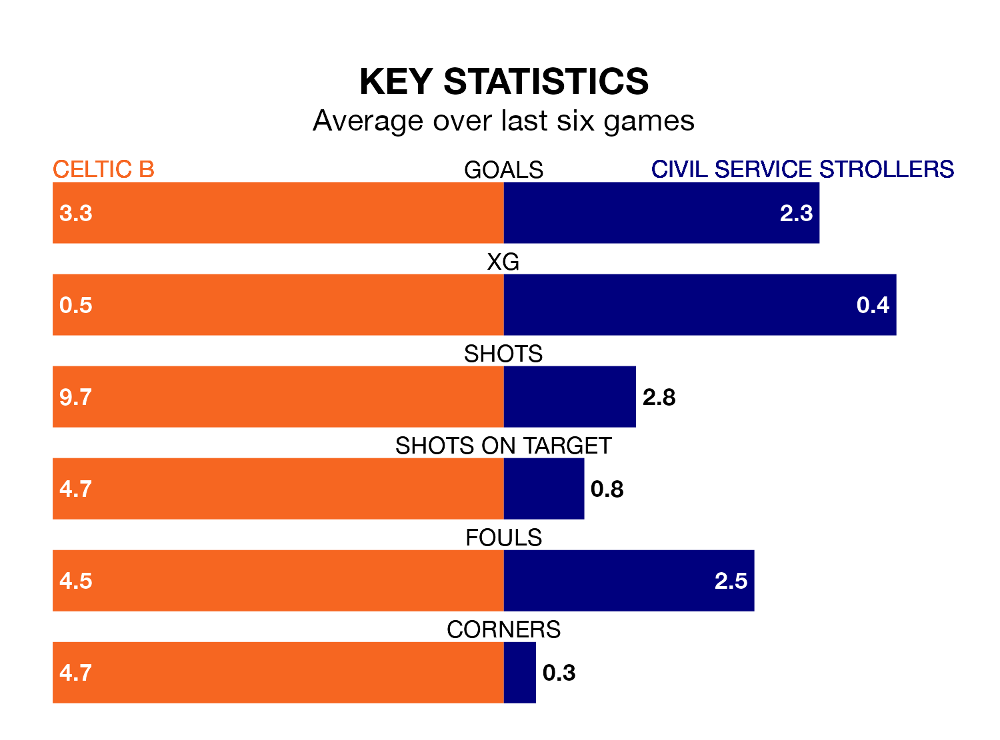

Celtic B face a challenge to maintain their high-scoring form at home against a tight Civil Service Strollers defence on Saturday.
With 54 goals in 24 games, Celtic B are the third-highest scorers in Lowland Football League ahead of the 3pm kick-off at the Excelsior Stadium.
They face a Civil Service Strollers side who have scored 38 in 24 matches, but conceded only 26 goals, putting them fourth among the league's tightest defences – only Tranent Juniors, Linlithgow Rose and Albion Rovers have conceded fewer goals.
Celtic B are in good form in Lowland Football League, with four wins and two draws from their last six games.
With four wins and a draw over that period, Civil Service Strollers's form is slightly worse – they have taken 13 points from 18, compared to the home team's 14.
The visitors are sixth in the table after 24 games, of which they have won 12 and drawn five, earning 41 points.
Celtic B are one place behind Civil Service Strollers in seventh, with 11 wins and four draws putting them on 37 points.
In the last five years, Celtic B and Civil Service Strollers have played each other on five occasions. Celtic B won three of them, Civil Service Strollers one, and they drew once.
On average, Celtic B scored 2.2 goals and Civil Service Strollers 1.0 in those matches.
Their last meeting was on August 12, when Civil Service Strollers won 3-1 at home.
Celtic B's last match was on February 3, a 3-1 win against Bo'ness United.
Civil Service Strollers drew 1-1 with Cowdenbeath last time out, on January 27.
Updated: 14:59 (UTC), 05/02/24